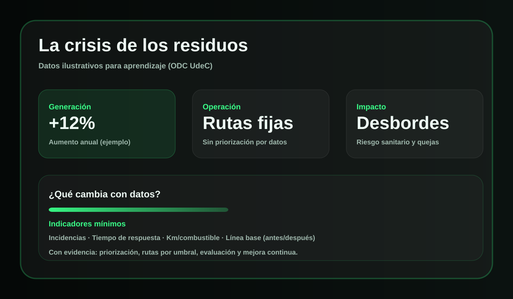
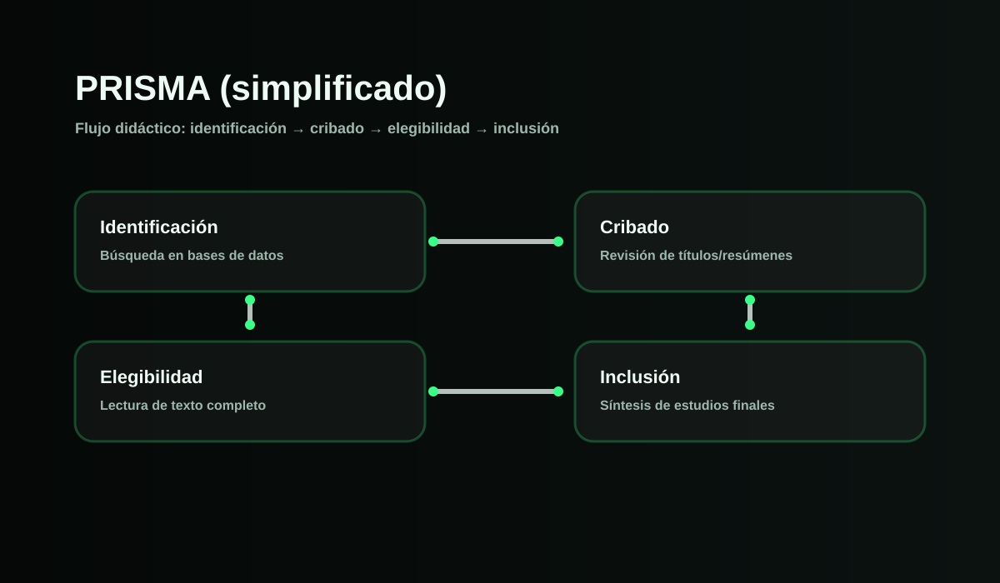

Analítica de Datos para RSU en
Universidad de Cundinamarca · Extensión Chía
Objeto Digital de Conocimiento sobre analítica de datos, IA, IoT
y Big Data aplicados a la gestión sostenible de residuos sólidos
urbanos.
Posgrado en Analítica y Ciencia de Datos
12 pantallas interactivas
versión 1.0 · 2026
Sofía González Zubieta · Luis Carlos Beltrán Orozco
🔊
Conoce el propósito del ODC y cómo navegar por sus módulos.
ODC
Hola, este recurso te guiará por el uso de analítica
de datos para optimizar la gestión de residuos urbanos. Cuando estés
listo, inicia el recorrido.
REA y Población objetivo
Una vista rápida, aplicada y ambiental del propósito del ODC.
☁️♻️
¿De qué trata este ODC?
Este ODC aborda la analítica de datos y la transformación
digital como herramientas para mejorar la eficiencia en la
gestión de residuos sólidos urbanos en la Universidad de
Cundinamarca, Extensión Chía. Integra inteligencia artificial,
IoT y Big Data para apoyar la recolección, procesamiento y
análisis de información orientada a la sostenibilidad, la
economía circular y la toma de decisiones.
🎯📈
Resultado Esperado de Aprendizaje
Al finalizar el ODC, el estudiante analizará el impacto de la
analítica de datos en la gestión de residuos sólidos urbanos en
la Universidad de Cundinamarca, Extensión Chía, mediante un
esquema comparativo que permitirá evaluar la eficiencia
operativa, la sostenibilidad ambiental y la viabilidad de
herramientas tecnológicas como la IA, el IoT y el Big Data.
🎓👩🏫🏢🌿
¿Para quién está diseñado?
El ODC está dirigido a estudiantes, docentes, administrativos y
comunidad académica interesada en sostenibilidad, gestión
ambiental, analítica de datos y transformación digital. También
puede ser útil para gestores ambientales municipales y actores
comunitarios vinculados con la mejora de la gestión urbana de
residuos.
Mini actividad · Rompecabezas
Arma la secuencia del ODC en un rompecabezas interactivo.
Este recorrido transforma los datos en decisiones para una gestión
de residuos más sostenible.
Módulo 1 · Problema ambiental
Propósito: reconocer la crisis de los residuos y
entender por qué se requieren decisiones basadas en datos.

Infografía: “La crisis de los residuos” (datos ilustrativos para
aprendizaje).
Contenido
La gestión de residuos es un servicio urbano que combina
logística, salud pública y sostenibilidad. En escenarios sin
medición continua, la planeación se apoya en recorridos fijos y
reportes tardíos, lo que genera visitas a contenedores vacíos,
atención tardía a puntos críticos y baja trazabilidad de
incidentes. Para mejorar, se requiere una base mínima:
registrar, comparar y ajustar con indicadores.
Actividad (Checklist)
Marca los elementos que considerarías para diagnosticar el
problema con evidencia.
Ver transcripción
Módulo 1. La crisis de los residuos se agrava cuando no se mide.
Sin datos no puedes priorizar zonas, comparar rutas ni demostrar
mejoras. El primer paso es construir una línea base con
indicadores simples: incidencias, tiempos de respuesta y costos
operativos. Eso convierte el problema en algo gestionable.
Módulo 2 · Conceptos clave
Propósito: definir IA, IoT y Big Data y asociar
cada tecnología con una función en la gestión de residuos.
Definiciones clave
La CTI aporta herramientas para capturar datos, analizarlos y
convertirlos en decisiones. Explora los términos técnicos:
,
y
.
Actividad (Arrastrar y soltar)
Asocia cada tecnología con su función principal. Luego presiona
“Validar”.
Capturar datos en tiempo real
Consolidar históricos e indicadores
Predecir y recomendar decisiones
Ver transcripción
Módulo 2. CTI combina tres capacidades: IoT para medir el mundo
físico, Big Data para organizar datos e indicadores, e IA para
aprender patrones y apoyar decisiones. El valor aparece cuando
cada tecnología se traduce en una acción: priorizar, optimizar y
evaluar con evidencia.
Módulo 3 · Tecnologías digitales
Propósito: comprender el rigor científico y la
metodología PRISMA como guía para revisar evidencia.

PRISMA: flujo simplificado para revisión sistemática (esquema
didáctico).
Rigor científico
Un proyecto CTI se fortalece cuando se apoya en evidencia
confiable. PRISMA ayuda a documentar el proceso de búsqueda y
selección de estudios, evitando sesgos por “escoger lo que me
conviene”. La idea central es la transparencia: criterios
claros, registro de exclusiones y síntesis de resultados. En
gestión de residuos, esto permite justificar decisiones
tecnológicas (sensores, modelos, rutas) con respaldo.
Actividad (Ordena los pasos PRISMA)
Ordena las etapas del flujo PRISMA de manera correcta y presiona
“Validar”.
Elegibilidad
Identificación
Inclusión
Cribado
Ver transcripción
Módulo 3. PRISMA es una guía de transparencia para revisiones
sistemáticas. No solo importa lo que encuentras, sino cómo lo
encontraste y por qué excluiste estudios. Con PRISMA puedes
sustentar decisiones CTI con evidencia y reducir sesgos al
documentar búsqueda, cribado, elegibilidad e inclusión.
Módulo 4 · Esquema comparativo
Propósito: analizar el impacto de los datos en la
eficiencia operativa y explorar un simulador de decisiones.
Impacto en eficiencia
Con datos (incidencias, llenado, tiempos) se pueden comparar
escenarios: rutas fijas vs. rutas por umbral vs. rutas
dinámicas. La eficiencia se evidencia con indicadores:
kilómetros, combustible, tiempo y desbordes. Un simulador ayuda
a visualizar el “antes y después” y a justificar decisiones.
Simulador (Chart.js)
Selecciona una estrategia y ejecuta la simulación.
Actividad (Simulador de decisiones)
Si un contenedor supera el 80% y la zona registra incidencias,
¿qué decisión es más coherente con evidencia?
Ver transcripción
Módulo 4. El análisis conecta indicadores con decisiones. Cuando
eliges una estrategia, debes observar qué cambia: kilómetros,
combustible, tiempo y desbordes. Usa el simulador para
visualizar escenarios. Recuerda: la mejor decisión no es la más
tecnológica, sino la que mejora indicadores con evidencia y
puede sostenerse en operación.
Módulo 5 · Indicadores clave
Propósito: reconocer la economía circular en la
práctica y analizar un caso breve con retroalimentación.
Economía circular
La economía circular busca mantener el valor de los materiales
el mayor tiempo posible: prevenir, reutilizar, reciclar y
aprovechar. En residuos, esto se traduce en separación en la
fuente, rutas diferenciadas, puntos limpios y seguimiento con
indicadores. Los casos reales suelen combinar educación,
incentivos, logística e información para demostrar resultados.
Microvideo (1–2 min): inserta un archivo en
assets/video/ y agrega el
<source> correspondiente.
Ver transcripción
(Transcripción del microvideo) Describe el caso: contexto,
intervención, resultados y aprendizajes. Incluye indicadores
antes y después. Reemplaza este texto con el guion real del
video.
Actividad (Caso breve)
Caso: en una comuna se implementa separación en la fuente y
recolección diferenciada. En 4 semanas, disminuyen desbordes
pero suben quejas por horarios. ¿Qué acción es más coherente?
Ver transcripción
Módulo 5. En casos de economía circular, el reto no es solo
técnico: también es coordinación y comportamiento. Un buen caso
incluye línea base, intervención clara e indicadores antes y
después. Si aparecen quejas, se ajusta la operación con datos y
se comunica, sin perder el avance en reducción de desbordes.
Módulo 6 · Evidencia PRISMA
Propósito: relacionar prácticas 3R con ODS y
seleccionar acciones sostenibles en la gestión de residuos.
3R y ODS
Reducir, Reutilizar y Reciclar son prácticas concretas que se
conectan con metas de sostenibilidad. En residuos, la 3R se
fortalece con datos: medir generación por zona, identificar
materiales recuperables y evaluar el efecto de campañas y rutas
diferenciadas. Los ODS proveen un marco para reportar impacto y
orientar decisiones públicas.
Actividad (Selección múltiple)
Selecciona las acciones alineadas con 3R y ODS. Luego valida.
Ver transcripción
Módulo 6. La sostenibilidad se concreta con acciones 3R y se
reporta con ODS. Si separas en la fuente, haces rutas
diferenciadas y mides recuperación, puedes demostrar impacto.
Evita decisiones que aumenten recorridos sin evidencia. Usa
indicadores para aprender y ajustar.
Módulo 8 · Evaluación final
Evaluación sumativa (8 ítems) alineada al REA. Retroalimentación
inmediata y sugerencias de repaso por tema.
Módulo 9 · Conclusiones
Síntesis
La gestión inteligente de residuos mejora cuando se integra el
problema (crisis de residuos), la tecnología (CTI), el rigor
científico (PRISMA) y el análisis con datos (indicadores y
simulación). La decisión correcta es la que demuestra impacto:
reduce recorridos innecesarios, mejora tiempos de respuesta y
disminuye desbordes, con evidencia y seguimiento.
Acciones prácticas (siguientes pasos)
Define 4 indicadores base: incidencias, tiempo de respuesta, km
por ruta, combustible.
Selecciona una zona piloto, define un umbral (p. ej., 80%) y una
regla operativa.
Ejecuta 2 semanas, compara antes/después y documenta hallazgos.
Escala solo lo que muestre impacto y sostenibilidad operativa.
Ver transcripción
Conclusión. Para gestionar residuos de forma inteligente necesitas
cuatro elementos: entender el problema, aplicar CTI con propósito,
sustentar decisiones con evidencia y evaluar resultados. Empieza
pequeño: define indicadores, prueba un umbral y compara antes y
después. Lo importante es demostrar impacto y aprender con datos.
Módulo 10 · Referencias y créditos
Incluye mínimo 20 fuentes. Formato APA 7 con sangría francesa.